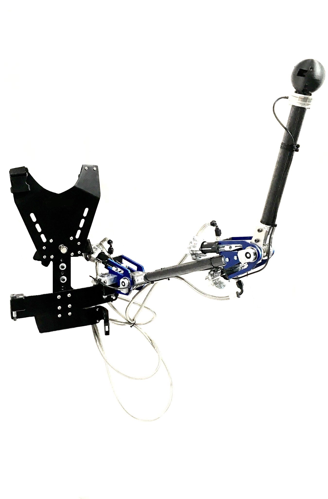

Abstract
Supernumerary robotic arms are robotic limbs that can help you do things that would be uncomfortable, dangerous or impossible to do on your own. The concept is to augment the number of limbs of a user, with artificial ones that are attached to a harness. Lightweight wearable robots prototypes such as this concept were developed. Research axis include 1) the design of lightweight robotic arm, 2) the control of the arm with the human in the loop and 3) the user interface between the human and the machine.
Publications & Resources
📄 Article (arXiv): C. Véronneau, J. Denis, L. Lebel, M. Denninger, J. Plante and A. Girard, "A Lightweight Force-Controllable Wearable Arm Based on Magnetorheological-Hydrostatic Actuators," 2022.📄 Article (IEEE): C. Veronneau, J. Denis, L. Lebel, M. Denninger, J. Plante and A. Girard, "Multifunctional Remotely Actuated 3-DOF Supernumerary Robotic Arm Based on Magnetorheological Clutches and Hydrostatic Transmission Lines," IEEE Robotics and Automation Letters, vol. 5, pp. 2546-2553, 2020.
Project Media
3 DoF prototype
3 DoF prototype

2 DoF prototype